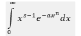

SUMMARY ABOUT ME
p ersonal
| Name | Patrick |
| Middle Name | Azere |
| Surname | Phiri |
| Marital status | Married with three Children |
| Birthday | 25 November, 1951 |
| Place of Birth | Chipata, Zambia |
Educational Qualifications
Ph.D. Applied Mathematics University of Leeds, England 1979 Title of Thesis: `Equilibrium points and control problems in dynamic urban modelling’
M.Sc. Applied Mathematics University of Zambia, 1976 (degree awarded in 1980) Title of thesis: `The use of statistical mechanics in urban and regional modelling’
B.Sc. with Merit with majors in Mathematics and Physics University of Zambia, 1974
Assessor Training, South Africa (2008)
MY ACHIEVEMENTS
courses taught
undergraduate and postgraduate programmes
publications
In Referrence journals, Conference Proccedings, Books Written and Chapters in Books.
years of experience
Zambian, Swazi Mathematics Educator.
MY ACCOMPLISHMENTS
at Copperbelt University
1. Sourcing of scholarships for postgraduate students to conduct their research in Spain.
a) ERASMUS KA 107 Project:
Under this project, I arrange scholarships for CBU postgraduate (Masters and Ph.D.) students to study at the University of Valladolid (UVa) in Spain. The scholarships enable them to carry out the research component of their studies at UVa. Thus the CBU students are exposed to world class facilities. The students spend five months at UVa. There are usually two batches of students that travel to Spain, one batch departs in February (returning in July) and another batch leaves in September (up to January). CBU participation in this project has been for the past seven to eight years. Furthermore, modalities are being pursued for establishing joint Master’s degree programmes for selected subjects between CBU and UVa.
b) DREAM ACP Project:
Under the DREAM (Dynamising Research and Education for All through Mobility) ACP project, I organized scholarships for eleven CBU postgraduate students to spend five months each in various European universities to carry out research for their Masters degrees. This project is not on-going.
2.Sourcing of scholarships for students from other African countries to come to CBU for their postgraduate studies
c) AFIMEGQ Project:
Through the AFIMEGQ (Africa for Innovation, Mobility, Exchange, Globalisation and Quality) project, between 2013 and 2017, I organized scholarships for seven students from various African universities came to CBU to study for their postgraduate degrees. The students came from Cameroon, Kenya, Uganda and Senegal.
as SAMSA* President
*SAMSA (The Southern Africa Mathematical Sciences Association) is an association of mathematicians and mathematical scientists residing in the southern African region namely, in Botswana, Lesotho, Malawi, Mozambique, South Africa, Swaziland, Tanzania, Zambia and Zimbabwe. SAMSA has done much to identify mathematicians in the region as a body with a common purpose.
Secured funding for SAMSA for workshops and conferences from various donors as follows (1984 – 2000): International Centre for Theoretical Physics, US$80,000 (on various occasions); London Mathematical Society, £2,000; Africa Mathematical Union, US$5,000; Committee for Development and Exchange US$2,500.
In 1996 secured funding of US$500,000 from the Norwegian Government to launch a regional Postgraduate programme. These funds were used to pool resources to make postgraduate studies accessible to many students in the southern African region (who had no access to postgraduate studies education at that time) to study for M.Sc. and Ph.D. degrees through the SAMSA initiative. The programme was initially based in Harare, then Gaborone and it is now based in Dar es Salaam. So far more than 20 PhDs and more that 100 MSc graduates have been produced by this SAMSA initiative. This SAMSA initiative is on-going.
MY WORK EXPERIENCE
Click the "More" button to access more imformation.
Work Timeline Summary
-
2011 – presentCopperbelt University
School of Mathematics and Natural Sciences
Key function: Giving undergraduate and postgraduate lectures and conducting research -
May 2014 – 2017
Directorate for Distance Education and Open Learning
Key function: to manage all aspects of distance education and open learning at CBU -
2011 – May 2014
-
2009 – 2011University of Pretoria
(awaiting appointment to Copperbelt University)
Undergraduate courses taught: Calculus, Linear Algebra, Multivariate Calculus -
2002 – 2009North West University, Mafikeng Campus, Mathematics Department
Postgraduate student supervision
Ph.D. Mathematics Education: Duncan Makhure, North West University, Mafikeng campus, Title of Thesis: `Introduction to Mathematical Literacy as a Compulsory Subject Area at the Further Education and Training Phase: A Comparative Study’ (co-supervisor), graduated 2007
M.Sc. Applied Mathematics: Aaron Tau, North West University, Mafikeng Campus, Title of Dissertation: `Conservation Laws in Optimal Control Theory’ (sole supervisor), graduated 2006
B.Sc. (Honours) Financial Mathematics: Matlhomola Jacob Xaba, North West University, Title of Project: `The Volatility Smile and Its Implied Tree’ (main supervisor), graduated 2006
M.Sc. Financial Mathematics: Christelle Cronje, North West University, Potchefstroom Campus, Title of Dissertation: `Value at Risk: The Land Bank’ (co-supervisor), graduated 2005
B.Sc. (Honours) Applied Mathematics: Collins Ngubane, North West University, Mafikeng Campus, completed and graduated. Title of Dissertation: `Cell to Cell mapping for computing optimal control signals’ (sole supervisor), graduated 2004. -
1982 - 2000University of Swaziland (Eswatini)
-
1979 – 1982University of Zambia
Mathematics Department
Postgraduate courses taught: Control theory; Theory of differential equations; Methods of optimization
Undergraduate courses taught: Differentiation and Integration, Analytic Geometry, Vectors, Vector Calculus, Differential Equations and Complex Analysis.
ABOUT MY SKILLS (+MORE)
SUMMARY OF SKILLS
Administrative and leadership skills in an academic environment.
- Development of an institutional plan over a fixed number of years (usually five years) in which the aims and objectives of the institution are presented in measurable terms and, periodically, the performance of the institution is gauged against those measurable terms. Measures are taken to ensure that the institution implements its aims and objectives.
- Overall administrative responsibility and resource management including equitable distribution of resources to optimize strategic and academic planning aims for the development of the institution as a professional resource centre.
- Participation in the institution’s structures of governance in an integrated approach towards the realization of the institution’s mission and objectives.
- Encouragement of the development of multi-disciplinary research programmes in close liaison with other related disciplines and rendering assistance with procurement of external funding for such programmes.
- Initiation, supervision and leading in research and promoting collaborative research locally, across institutional boundaries and internationally.
- Quality assurance: monitoring of research and teaching performance of staff.
- Preparation and justification of annual budgets, and monitoring and management of all incomes and expenditures.
- Liaison of relevant institutional structures in the recruitment of new staff and admission of new students.
- Chairing of meetings.
Skills developed as President of SAMSA
- Forging of international links to form strategic research partnerships.
- Liaison of research activities among researchers in universities and other tertiary institutions of learning.
- Forging of research partnerships in tertiary institutions of learning.
- Initiation of research projects.
- Publishing research findings in scientific journals or as Proceedings of conferences or workshops.
- Compiling of reports from representatives and the chairing of meetings.
Skills developed as Treasurer of SAMSA
- Preparing research projects and securing of funding from local and international organizations.
- Managing funds in accordance with programme budgets.
- Writing financial reports for international organisations from which funding is secured.
Skills inherent in Ph.D. training in Applied Mathematics
- The application of qualitative and quantitative methodologies to models of various phenomena and their interpretation.
- The use of software to analyse mathematical models of various phenomena and the interpretation of results.
Academic skills gained
- Publishing of research findings in journals.
- Supervision of postgraduate research students studying for Honours, Master’s and Ph.D. degrees.
- Lecturing of specific courses at both undergraduate and postgraduate level.
COPPERBELT UNIVERSITY (MORE)
Membership, Supervision and Teaching.
Membership of University Committees
Member, Senate.
Member, University Strategy and Risk Committee.
Member, Standing Committee of Professors on Promotions to Professorial Ranks.
Member, School Appointments and Planning Committee.
Ph.D. Supervision
- Gregory Lutanda Panga, `Abstract of Symplectic Yang-Mills fields’, graduated 2015.
- Sintema Edgar John, `Concept formation in the teaching of Mathematics’. (graduated from University of Valladolid in 2020) (joint supervisor)
- Mulenga Eddie Mumba, `Use of social media in the teaching of Mathematics’. (graduated from the University of Valladolid in 2020) (joint supervisor)
- Justina Mulenga, `Solution of a system of nonlinear equations by Adomian decomposition method’. (expected to graduate 2023)
- Helena Nayar, `The Differential Transform Method: a method for solving partial differential equations’. (expected to graduate 2023)
MPhil Supervision
- Tapyuwa Nil Siasimbi, `Challenges in the learning of mathematics: a case of Kapiri Mposhi Town Schools’, graduated 2019.
- Nulla ipsum dolor lacus, suscipit adipiscing.
MSc Supervision
- Sakala Sakala, (graduated 2021)
- Amos Silungwe (graduated 2022)
- Emmanuel Simusizya (graduated 2022)
Postgraduate Teaching
- MA 550: Advanced Calculus
- M 511: Methods of Mathematical Physics
- EN 611: Applied Mathematics
- EN 612: Stochastic Processes
Undergraduate Teaching
- M 424: Complex Analysis
- MA 430: Complex Analysis for Education students
- M 250: Dynamics
- MA 210: Linear Algebra
- MPH 310: Mathematics for Physicists III
- MPH 410: Mathematics for Physicists IV
NORTH WEST UNIVERSITY (MORE)
Teaching and Examination.
Postgraduate courses taught
- Optimal Control Theory
- Calculus of Variations
- Non-Linear Systems Theory
- Global Theory and Bifurcation
Undergraduate courses taught
- Pre-Calculus I
- Calculus I
- Calculus II
- Introduction to Mechanics
- Fluid Mechanics
External Examination duties carried out
- M.Sc. Applied Mathematics, University of Limpopo, 2005
- M.Sc. Applied Mathematics, University of Limpopo, 2009
- M.Sc. Applied Mathematics, University of Fort Hare, 2009
- M.Sc. Cape Peninsula University of Technology, 2009, 2010
UNIVERSITY OF SWAZILAND (MORE)
Teaching, Membership, etc...
Undergraduate courses taught
- Algebra, Trigonometry and Analytic Geometry, Differentiation and Integration, Multivariate Calculus, Differential Equations, Mathematics for Scientists, Quantitative Methods for Business, Dynamics I, Vector Analysis, Dynamics II, Cartesian Tensors, Special Functions, Fluid Dynamics, Logic, Set Theory, Linear Algebra, Linear Programming, Real Analysis, Group Theory, and Topology.
Undergraduate student manuals written (1993 – 1997)
- Algebra and Trigonometry for Social Scientists
- Calculus for Social Scientists
- Introduction to Differential Equations
- Elements of Complex Analysis
- Special Functions of Mathematical Physics
- Classical Mechanics
- Introduction to Fluid Mechanics
- Mathematics for Scientists
- Principles of Dynamics
External Examination duties carried out
- Ph.D. Applied Mathematics, National University of Science and Technology, Bulawayo, Zimbabwe, 2000
- M.Sc. Applied Mathematics, Makerere University, Kampala, Uganda, 1999, 2000
- B.Sc., M.Sc. Applied Mathematics, National University of Science and Technology, Bulawayo, Zimbabwe, 1998, 1999, 2000
- B.Sc. Applied Mathematics, University of Natal, Pietermaritzburg, South Africa, 1998, 1999
- Sc. Applied Mathematics, University of Dar es Salaam, Tanzania, 1992 – 1994, 1997 – 1999
Membership of Committees
Senate
Admissions Committee
Research and Publications Committee
Postgraduate Studies Committee
Planning Committee
Library Committee
Building Committee
Editorial duties of Journals
- Editor in Chief, Southern Africa Mathematical Association (SAMSA) Journal, 2000 – 2001
- Member, Editorial Board, University of Swaziland (UNISWA) Research Journal, 1987 – 1991
PUBLICATIONS
A. In refereed journals
- Justina Mulenga and Patrick Azere Phiri, ``A new modified Adomian Decomposition Scheme for solving linear and non-linear boundary value problems with Neumann conditions’’, paper submitted to Mediterranean Journal of Mathematics, September 2022.
- Justina Mulenga and Patrick Azere Phiri, ``Mathematical Modelling and Analysis of Covid-19’’, paper submitted to Computational and Mathematical Methods in Medicine, September, 2022.
- Helena Nayar and Patrick Azere Phiri, ``The Fornberg-Whitham Equation Solved by the Differential Transform Method’’, Journal of Advances in Mathematics and Computer Science, 35(7), pp. 85 – 95, October 2020
- Helena Nayar and Patrick Azere Phiri, ``A New Modification of the Differential Transform Method’’, Asian Journal of Mathematics and Computer Research, 27 (3), pp. 38 – 51, October 2020.
- Justina Mulenga and Patrick Azere Phiri, ``New Modified Adomian Decomposition Method for Solving Second Order Boundary Value Problems with Newman Boundary Conditions’’, International Journal of Science and Research, Volume 9, Issue 9, pp. 1119 – 1123, September 2020
- Justina Mulenga and Patrick Azere Phiri, `` Solution of Two-Point Linear and Nonlinear Boundary Value Problems with Neumann Boundary Conditions Using a New Modified Adomian Decomposition Method’’, Computers and Mathematics with Applications, 35 (7) pp. 49 – 60, September 2020.
- Tapyuwa Siabasonda and Patrick Azere Phiri, ``A comparative analysis of Zambian Primary School Pupils’ conceptual knowledge of integers and fractions’’, Asian Journal of Current Research, 4(1): 24 – 32, 2019.
- Tapyuwa Siabasonda and Patrick Azere Phiri, ``Zambian Primary School Pupils’ knowledge of integers’’, Journal of Basic and Applied Research International, 25(3), 127 – 133, 2019.
- Edgar John Sintema, Patrick Azere Phiri and Jose Maria Marban Prieto, ``Zambian Mathematics Pre-Service Secondary teachers’ knowledge of the function concept: theoretical framework and a literature review with implications for Zambia,’’ Journal of Global Research in Education and Social Science, 12 (3), pp. 133 – 147, 2018.
- Tapyuwa Siabasonda and Patrick Azere Phiri, ``Identifying difficulties facing Zambian primary school pupils when learning fractions’’, Journal of Global Research in Education and Social Science, 12 (3), pp 121-132, 2018.
- Helena Nayar and Patrick Azere Phiri, ``The solution of linearized Korteweg-de Vries equation using the differential transform method’’, Journal of Advances in Mathematics and Computer Science (past name British Journal of Mathematics and Computer Science), 29(2), pp. 1 - 10, 2018.
- Eddie M. Mulenga and Patrick Azere Phiri, ``Zambian teachers’ profiles of ICT use in mathematical pedagogy’’, Journal of Basic and Applied Research International, 24(4), pp. 137 – 148, 2018.
- Edgar John Sintema and Patrick Azere Phiri, ``An investigation of Zambian mathematics student teachers’ technological pedagogical content knowledge (TPACK)’’, Journal of Basic and Applied Research International, 24(2), pp. 70 – 77, June 2018.
- Lutanda Panga G, Mateso Tailoshi B., Patrick Azere Phiri, Kabunda Kasakwa H, Bwalya Mulumba I., " On The Category of Symplectic Yang-Mills Fields", International Journal of Science and Research, Volume 7 Issue 6, pp. 1134 – 1136, June 2018.
- G. Lutanda Panga, P. Azere Phiri, P. Muyumba Kabwita, ``Abstract for Symplectic Yang-Mills Fields’’, International Journal of Innovation and Scientific Research, Vol. 6, No. 11, pp. 1101 - 1105, November, 2017.
- P. A. Phiri and O. D. Makinde, ``A computational technique for Laplace Transforms by Adomian Decomposition’’, Asian Journal of Mathematics and Computer Research, Vol 21, No.1, pp. 22-27, October 2017.
- G. Lutanda Panga, P. Azere Phiri, P. Muyumba Kabwita, ``Yang-Mills equations for a pullback symplectic Yang-Mills field’’, International Journal of Innovation and Scientific Research, Vol. 6, No. 2, pp. 987 – 990, February, 2017.
- G. Lutanda Panga, P. Azere Phiri, P. Muyumba Kabwita, `Kahlerian structure associated to de Sitter group’, International Journal of Innovation and Scientific Research, Vol. 28, No. 2, pp. 152 - 155, January, 2017.
- Phiri P.A. and Makinde O.D., `Evaluating integrals of the form by Adomian decomposition’, International Journal of Physical Sciences, Vol. 7, Number 8, pp. 1219 – 1223, February, 2012.
- Phiri P.A. and Makinde O.D., `A new derivative free method for solving nonlinear equations’, International Journal of Physical Sciences, Vol. 5 (7), pp. 935 – 939, July 2010
- Engelbrecht J, Harding A, Phiri P.A. `Are OBE trained learners ready for university mathematics?’ Pythagoras, Vol. 72, pp3 – 13, 2010.
- Engelbrecht J, Harding A, Phiri P.A. `Are students who have been trained in an outcome based approach education ready for university mathematics?’ South African Journal for Science and Technology, Volume 28 (4), pp. 289 – 302, 2009.
- Wafo Soh C., Phiri, P.A. and Pooe, C.A., Non-equivalent similarity reductions of steady 2D thermal boundary layer equations for an incompressible laminar flow over a continuous moving hot surface’, Fluid Dynamics Research, Vol.37, pp. 430 – 442, 2005.
- Phiri P.A. and Ngomane, C., `A review of the cell mapping method’, NWU Journal of Agriculture, Science and Technology, Vol. 2, No. 1, pp 108 - 110, August 2004.
- Phiri P.A. and Bathobame, S., `Perspectives in urban and regional modeling: equilibrium points and bifurcation’, NWU Journal of Agriculture, Science and Technology, Vol. 2, No. 1, pp. 99 - 101, August 2004.
- Phiri P.A., ‘Regional planning within an optimal control framework’, International Journal of Management Systems, Vol. 16, No. 1, pp. 71 – 82, 2000.
- Phiri P.A., `A method of scaling grades’, ABACUS, Journal of the Mathematical Association of Nigeria, Vol. 24, No. 1, 1994.
- Anderson, D.D., Jayaram, C. and Phiri, P.A., `Baer Lattices’, ACTA Scientiarum Mathematicarum, Vol. 59, pp. 61 – 74, 1994.
- Phiri P.A., `Rescaling marks for a purpose’, Swaziland Institute of Education Research Bulletin, No. 13, pp. 53 – 60, 1993.
- Phiri P.A., `A comparison of assessment by closed book and open book tests’, International Journal of Mathematics Education in Science and Technology, Vol. 24, No. 1, pp. 23 – 26, 1993.
- Phiri P.A., `The solution of optimal control problems with constraints on the state and control variables’, Swaziland Journal of Science and Technology, Vol. 12, pp. 55 – 66, 1991.
- Phiri P.A., `Stability of shopping facility sizes’, Swaziland Journal of Science and Technology, Vol. 11, pp. 38 – 45, 1990.
- Phiri P.A., `Application of Lera Schauder degree theory to hydrodynamic stability’, UNISWA Research Journal, Vol. 2, pp. 52 – 57, 1989.
- Phiri P.A., `The epsilon method for computing optimal control signals’, Swaziland Journal of Science and Technology, Vol. 9, No. 2, pp. 62 – 69, 1988.
- Phiri P.A., `Calculation of the equilibrium configuration of shopping facility sizes’, Environment and Planning A, Vol. 12, pp. 983 – 1000, 1980.
B. In conference proceedings
- Phiri P.A., `Methods of scaling marks’ paper presented at the Southern Right Delta ’09 conference, 29 Nov – 4 Dec, 2009, Gordon’s Bay, Cape Town, South Africa, 2009.
- Phiri P.A. `Pooling resources for capacity building: The SAMSA experience’, paper presented at a SARIMA (Southern African Research and Innovation Management Association) conference, 10 - 12 June, 2006.
- Phiri P.A., WafoSoh C., and Pooe, C.A.,` Invariant solutions of steady 2D thermal boundary layer equations for an incompressible laminar flow over a continuous moving hot surface’, paper presented at the conference of the South Africa Mathematical Society, University of the Witwatersrand, Johannesburg, South Africa, November, 2003.
- Phiri P.A., ` An algorithm for solving systems of non-linear equations’, Proceedings of the SAMSA Special Conference on Mathematics and Computers, University of Zimbabwe, Harare, September, 1994.
- Phiri P.A., `The robust control of non-linear equations’, Proceedings of the SAMSA IX Symposium, University of Botswana, Gaborone, Botswana, December 1993.
- Phiri P.A., `A method of rescaling marks’, Proceedings of the SAMSA VIII Symposium, Maputo, Mozambique, December, 1991.
- Phiri P.A., `The use of degree theory to determine the stability of the dynamic shopping model equations’, Proceedings of the SAMSA VIII Symposium, Maputo, Mozambique, December, 1991.
- Phiri P.A., `A comparison of penalty function methods’, Proceedings of the SAMSA VII Symposium, Zomba, Malawi, pp. 78 – 84, 1989.
C. Books Written
- P. A. Phiri, D. Vuma and L. S. Luboobi, `Mathematics for Scientists and Engineers, Volume I’, UNESCO Textbook, 1997.
- P. A. Phiri, V. G. Masanja, and D. Vuma, `Mathematics for Scientists and Engineers, Volume II’, UNESCO Textbook, 1998.
D. Chapters in Books
- Phiri P.A., `Logic’, of the `ICTP International Village Mathematics Textbooks Project’, Chapter 14, University of Dar es Salaam, 1992.